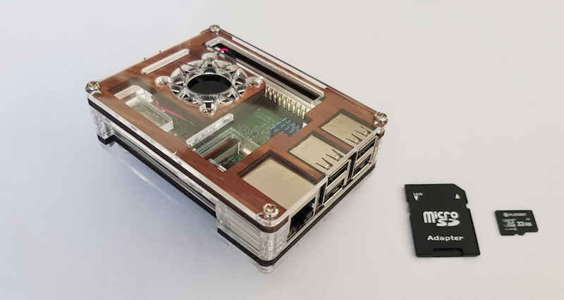

Mini servidor para prácticas ASIR basado en Raspberry Pi

Índice
- Introducción, justificación y objetivos del Proyecto
- Introducción
- Justificación
- Objetivos
- Planificación del Proyecto
- Selección de Sistema Operativo: Raspbian
- Instalación de un servidor web con LAMP
- ¿Que es LAMP?
- Instalación y configuración servidor web Apache
- Instalación de Apache
- Configuración y comprobación de su funcionamiento
- SCP (Secure Copy): Copiar archivos a través de ssh
- Instalación y configuración PHP
- Instalación y configuración MariaDB
- Creación base de datos en MariaDB
- Instalación de phpMyAdmin
- Consideraciones de seguridad
Acceso Externo al servidor WEB
- Acceso mediante IP externa
- Acceso mediante nombre de dominio
- Instalar y configurar DNS Dinámico
Conexión segura HTTPS: Uso de Let's Encrypt
- Acceso al puerto 443
- ¿Qué es Let's Encrypt?
- Obtención de certificado: Uso de certbot
- Ajustes adicionales
DOCKER: Instalación, primeros pasos y Apache
- ¿Que es Docker?
- Instalación de Docker en Raspbian
- Primeros pasos
- Instalación de Apache en Docker
Monitorización y Seguridad en la Raspberry-Pi
- Consejos generales
- Mejorar la seguridad SSH
- Proxy Internet: cache web - SQUID
- Monitorización en la Raspberry-Pi
- Archivos Log: Logwatch
- Monitorización del sistema: Munin
- Seguridad en la Raspberry-Pi
- Ataque por fuerza bruta: Fail2ban
- Detección de rootkits: Rootkit Hunter
- Auditoría de seguridad: Debsecan
- Cortafuegos: UFW
Consideraciones finales
Anexo 1: Hardware y montaje Raspberry-Pi
- Recomendaciones
- Características
Anexo 2: Instalación y configuración SO Raspbian
- Instalación de Raspbian
- Preparación tarjeta SD
- NOOBS. El instalador de Raspbian
- Otras opciones para la Raspberry
- Conexión a través de SSH
- Configuración básica de Raspbian
- Asignación de IP fija para la Raspberry Pi
- Adaptador de red
- /etc/dhcpcd.conf
- /etc/network/interfaces
- Dirección MAC en el router
Anexo 3: Git - Github - Visual Studio Code
Anexo 4: Backup de la Raspberry-Pi
Anexo 5: Referencias
Datos obtenidos en Web oficial Raspberry Pi
Última modificación: 30 de mayo de 2018
Esta página forma parte del proyecto Mini servidor para prácticas ASIR por Nacho López Espert